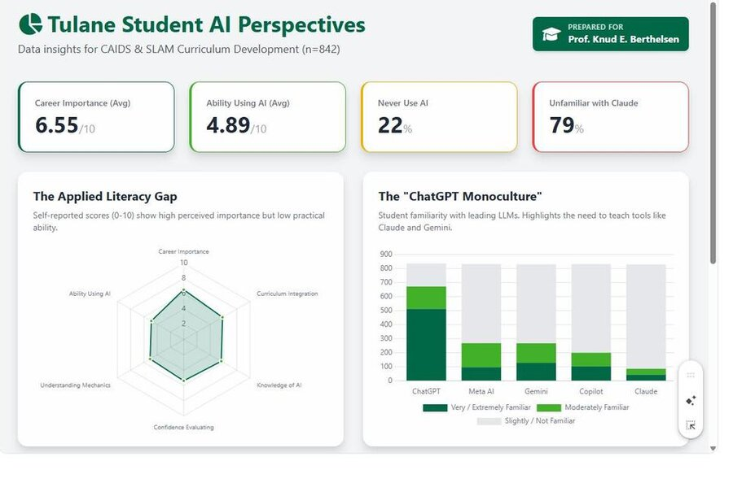
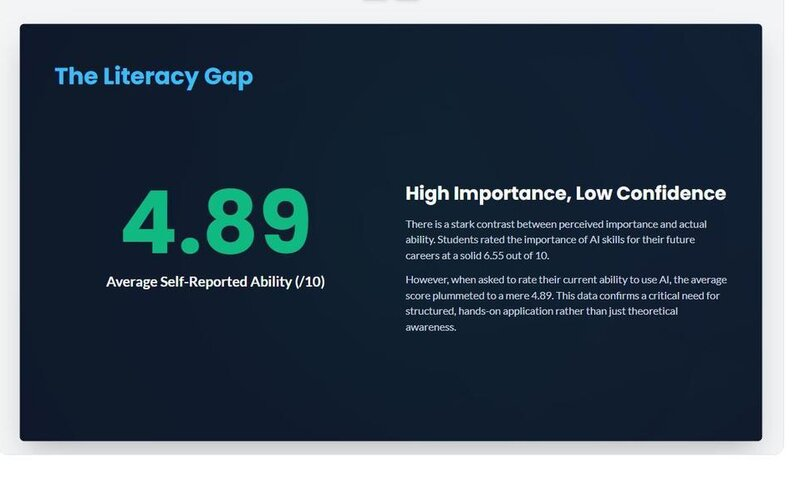
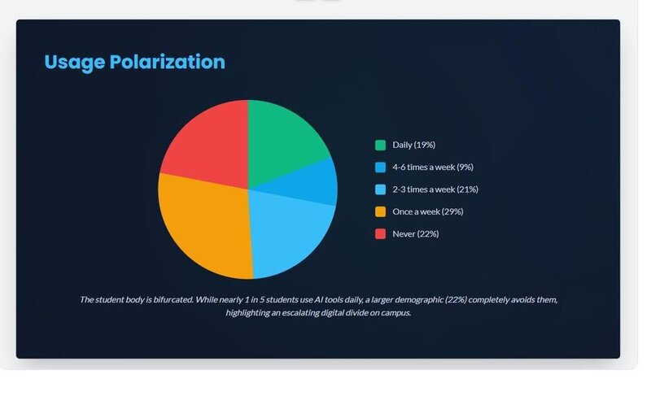
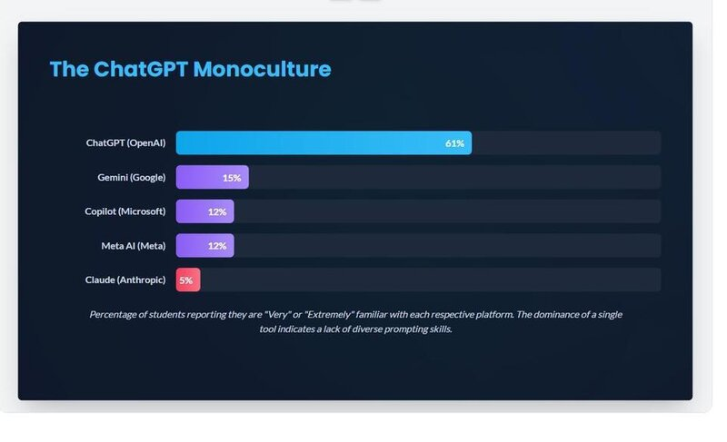
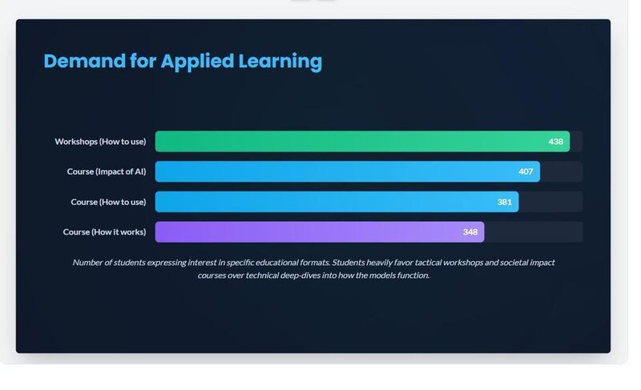
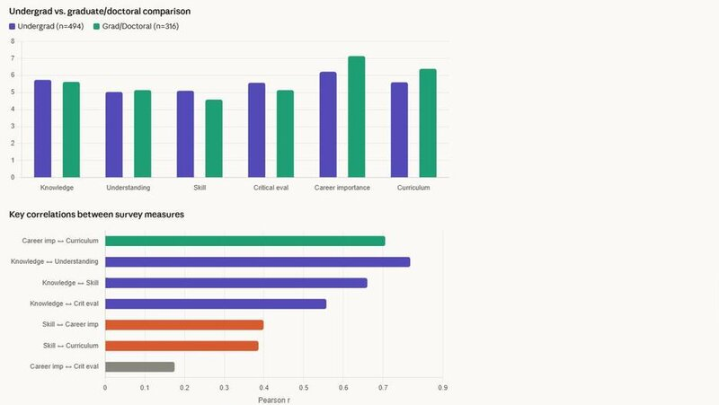
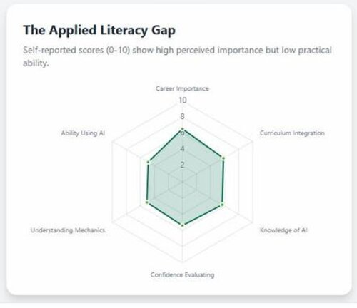
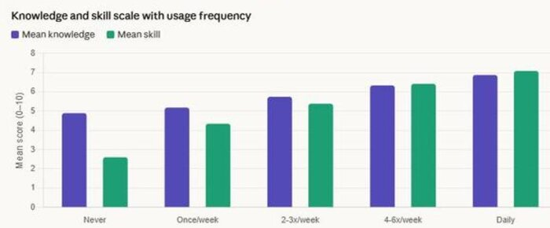
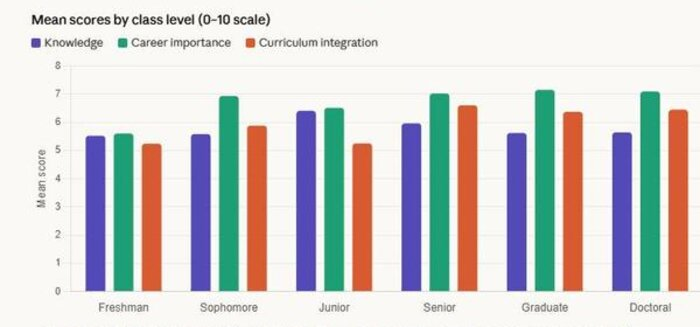

The hands-on analytics training you'll use for the rest of your career. 3 credits in 2 weeks.

Every job posting says "data-driven." But do you actually know how to work with data?
SLAM 2030 gives you the hands-on skills to collect, clean, analyze, and present data — the kind of skills that make you dangerous in a job interview and indispensable on a team.
You'll work with real datasets, use current tools (including AI), and learn how to turn numbers into stories that actually move people to action. You'll also learn to spot when data is being misused — a superpower in a world drowning in misleading charts and cherry-picked statistics.
Whether you're heading into business, policy, media, or anything else, the ability to make evidence-based arguments will set you apart.

Turn real-world problems into testable hypotheses and research designs
Recognize quality issues and prepare diverse datasets for analysis
Descriptive, exploratory, diagnostic, predictive & prescriptive techniques
Create compelling visualizations and narratives for any audience
Leverage current AI tools for analysis while understanding their limits
Identify statistical fallacies, data manipulation, and misleading visuals


This is an experiential, flipped classroom. You review materials before class, then spend class time doing — discussing, demonstrating, applying, reflecting. No death-by-lecture. You'll complete an individual project and a team project, both working with real data.
All you need: A laptop and a free Google account. No textbook. No prior data experience required.





Register now on Gibson
Search for SLAM 2030 in Maymester 2026
May 11 – 22 · Online · 3 credits